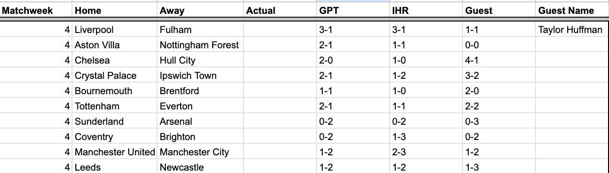

I was genuinely starting to wonder if the day could ever come after two horror showings but I’ve pulled off my first win in Matchweek 3. Magic Mike has dropped it low (to the bottom of the table) and it appears that the H100s have overheated; I finished the week with 7 points, to GPT’s 6, and MBZ’s 3.
This week I’m taking on Taylor Huffman (TJH). As a financials sector analyst and a Chelsea supporter, I am wondering what combination of market cap / trophy haul is required for him to get a “JPM” tattoo this May. Tate has made his friends aware that he has cried exactly six times in relation to sporting events. Had the “Championship” match we played together in our work league against “blue shorts guy” and co. gone differently that surely would’ve added to the count. In any case I’m hoping to make it number seven this week. Tate has returned to play another season in our work league but is on a minutes restriction as he deals with a hip labrum injury. I recently found out that the same NY-based orthopedic physician fixed the hips of Daniel Sturridge and Alex Rodriguez so that is always an option as we approach a potential playoff run.

The consensus picks were Chelsea over Hull City, Arsenal over Sunderland, Brighton over Coventry, City over United, and Newcastle over Leeds.
IHR and TJH agreed on Villa/Forest draw, Bournemouth over Brentford, Tottenham/Everton draw.
IHR and GPT agreed on Liverpool over Fulham.
GPT and TJH agreed on Crystal Palace over Ipswich Town – maybe they don’t realize that corn is back above $5 as I have a high conviction call on a win for the Tractor Boys.